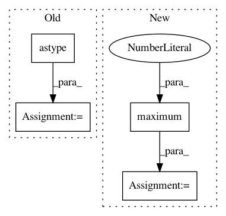

5f64707b8dc2929601b3ecca44144f3aa4071fb8,dask_ml/cluster/k_means.py,,_kmeans_single_lloyd,#Any#Any#Any#Any#Any#Any#Any#Any#Any#Any#Any#,391
Before Change
labels, distances = pairwise_distances_argmin_min(X, centers)
inertia = distances.astype(dt).sum()
centers = centers.astype(dt)
labels = labels.astype(np.int64)
return labels, inertia, centers, i + 1
After Change
)
counts = da.bincount(labels, minlength=n_clusters)
// Require at least one per bucket, to avoid division by 0.
counts = da.maximum(counts, 1)
new_centers = new_centers / counts[:, None]
new_centers, = compute(new_centers)
// Convergence check
In pattern: SUPERPATTERN
Frequency: 3
Non-data size: 4
Instances
Project Name: dask/dask-ml
Commit Name: 5f64707b8dc2929601b3ecca44144f3aa4071fb8
Time: 2017-10-30
Author: TomAugspurger@users.noreply.github.com
File Name: dask_ml/cluster/k_means.py
Class Name:
Method Name: _kmeans_single_lloyd
Project Name: interactiveaudiolab/nussl
Commit Name: 4f5bee81eeb9cecb9d040cb4436dd7f07e06b965
Time: 2020-03-22
Author: prem@u.northwestern.edu
File Name: nussl/separation/primitive/melodia.py
Class Name: Melodia
Method Name: create_harmonic_mask
Project Name: mozilla/TTS
Commit Name: e2d974e8be89cdbf7bfae6ed39ebe807e8033863
Time: 2018-04-17
Author: egolge@mozilla.com
File Name: utils/audio.py
Class Name: AudioProcessor
Method Name: _griffin_lim